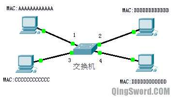

[CCNA图文笔记]-2-OSI参考模型和设备的对应关系
引言
OSI（Open System Interconnect），即开放式系统互联。 一般都叫OSI参考模型，是ISO（国际标准化组织）组织在1985年研究的网络互联模型，这篇文章给大家介绍一下OSI参考模型以及在这个参考模型下设备是如何运作的。
文章目录
- 0×1.ISO/OSI参考模型和设备的关系
- a.物理层(Physical Layer)
- b.数据链路层(Data Link Layer)
- c.网络层(Network)
- d.传输层(Transport Layer)
- e.会话层(Session Layer)
- f.表示层(Presentation Layer)
- g.应用层(Application Layer)
0×1.ISO/OSI参考模型和设备的关系
这是一个标准的OSI七层参考模型，从下往上依次是：物理层、数据链路层、网络层、传输层、会话层、表示层、应用层；

下面将详解在这个参考模型中，我们的设备都运行在哪一层，这些知识的了解会对以后的学习非常有帮助。
a.物理层(Physical Layer)
物理层关心的典型问题就是用什么方式来发送1和0，一位的持续时间，是否可同时双向进行，连接如何建立和如何终止等。
工作在物理层的设备有：
中继器(repeater)： 双绞线（RJ-45接口网线）的理论最大传输距离是100M，超过100M信号会衰减，这时候就要用到中继器，它能起到放大信号延长传输距离的作用。
集线器(hub)：集线器相当于一个多端口的中继器，也能起到放大信号的作用，并且集线器是属于半双工模式的（简单的理解成在同一时刻只有一个方向的数据可以传输，收的时候不能发，发的时候不能收），而在集线器连接的网络中，不管有多少个集线器，都只有一个广播域和一个冲突域。集线器工作原理如下图：
因为集线器属于物理层设备，无法判断数据链路层的MAC地址以及网络层IP地址，所以在这个集线器相连的网络里，假设PC0封装数据发送给PC1，集线器接收到PC0发来的数据后，直接将它转发到除接收端口以外的所有端口，这时候PC1/3/4都能收到这个数据，只不过根据包头部的MAC地址信息，只有PC1会处理它，PC3/4将丢弃这个数据包，而如果PC3/4上面运行了数据包分析软件，就可以捕获并分析PC0发出的数据，这种网络拓扑设计将非常不安全。
b.数据链路层(Data Link Layer)
数据链路层的主要功能是在不可靠的物理层上进行数据的可靠传输，将用户数据封装成帧（Frame），进行CRC效验（循环冗余效验）以及防止高速发送方的数据将低速方淹没等。
工作在数据链路层的设备主要有：
网卡(NIC Network Interface Card)：也叫网络适配器，在生产时将一个唯一的网络节点地址（MAC地址）烧录到了它的ROM中。MAC地址占用48位，前24位代表厂商，后24位为设备号。MAC地址可以通过一些软件设备来更改，但是更改的仅仅是显示，ROM中的MAC地址除非重新烧录否则无法更改。Windows系统在CMD中输入"ipconfig /all"来查看网卡的MAC地址；Linux系统可以在终端中输入"ifconfig"来查看；
网桥(Bridge)：网桥可以将两个局域网（LAN）连接并按照MAC地址转发数据帧，就好像他们是一个LAN一样，现在网桥大多应用于软件。工作原理如下图：
图中A、C连接在集线器1（Hub1）上，B、D连接在Hub2上，Hub1的一个接口连接在网桥的接口1上，Hub2的一个接口连接在网桥的接口2上（它们之间的连线都是直通线，集线器，网桥，计算机，三者属于不同设备，使用直通线），各PC的MAC地址以及IP地址如上图所示，其工作原理如下：
1）网桥如果刚刚加电启动，它的MAC地址缓存为空，此时假设A要发送数据给C，并且A已经知道C的MAC地址（这中间涉及到一个ARP获取MAC地址的操作，这里暂时不讨论），A将数据封装好发送给Hub1，Hub1是一个物理层设备，它简单的将信号放大从除接收端口以外的其他端口将数据发送出去（发送给C和网桥的接口1）；
2）网桥从接口1接收到A发过来的数据后，首先添加这个数据帧的源MAC地址，既A的MAC（AAAAAAAAAAAA）和对应的端口1添加到自己的MAC地址表中，然后从自己的MAC地址表中去查找这个数据帧目的地C的MAC地址，但是此时找不到，所以网桥以广播形式将这个数据帧从接口2发送出去；
3）集线器2收到这个数据帧，它将这个数据帧从除接收端口以外的其他端口发送出去，D和B都接收到了这个数据帧，D和B对数据帧进行检查时发现目的MAC地址与自己的网卡MAC地址不相同，计算机D和B丢弃这个数据帧；
4）在第1步中C也同时收到了这个数据帧，C检查目的MAC地址的时候发现，与本机相同，C接收这个数据包，并回发数据包对A进行确认，C封装一个源地址为自己MAC地址，目的地址是A的MAC地址的数据帧发送给集线器1，集线器将这个数据帧发给网桥的接口1和A；
5）网桥接收到这个数据帧，它首先添加C的MAC和对应的接口1到自己的MAC地址表，然后查询地址表的时候发现A的MAC地址同样处在接口1，网桥不再将这个数据帧从接口2发出，也不会将这个数据帧再重新从接口1发回去；
6）A收到C发回的确认，通信成功；
7）通过这种形式，最后网桥会学习到这个简单局域网中所有的电脑的MAC地址以及所在接口。如下：
| MAC Address | 端口 |
|---|---|
| AAAAAAAAAAAA | 1 |
| BBBBBBBBBBBB | 2 |
| CCCCCCCCCCCC | 1 |
| DDDDDDDDDDDD | 2 |
一个网桥包含两个冲突域、一个广播域；冲突域是发送一个单播会影响的范围，广播域是发送一个广播会影响的范围。
注：网桥并不具备三层设备的特性，这就意味着如果通过网桥将两个不同网段的局域网连接起来，这两个局域网之间是无法通信的，除非在其中配置默认路由指向一台三层设备，这台三层设备需要具有去往这两个网段的路由，否则当计算机往其他网段发送数据时，由于本地路由表并没有这个网段的路由，也没有配置默认路由，数据会在发送端直接被丢弃。
交换机（Switch）: 可以将交换机简单的看做多端口的网桥，因为它也根据收到的数据帧的源地址进行学习，也根据MAC地址表中的目的地址进行转发，但交换机有下面几个需要注意的地方，请看下图：
假如这个交换机学习到的MAC地址表如下：
| MAC Address | 端口 |
|---|---|
| AAAAAAAAAAAA | 1 |
| BBBBBBBBBBBB | 2 |
| CCCCCCCCCCCC | 3 |
其一：交换机对已知的单播帧，只发往对应的端口；比如A发给B，交换机中学习到了B的MAC，那么直接发往端口2；
其二：交换机对未知的单播帧，进行泛洪转发（即发往除接收端口以外的所有端口），比如C发送一个单播帧给D，这个数据帧到达交换机后，交换机MAC表中还没有学习到D的MAC，交换机将这个数据帧从1、2、4端口发出；
其三：交换机对所有广播和组播，进行泛洪转发（即发往除接收端口以外的所有端口）；
交换机可以划分为下面三类：
传统交换机：属于链路层，一个广播域，每个接口是一个冲突域；
VLAN交换机：属于链路层，可网管型，可以划分多个VLAN，每个VLAN是一个广播域，每个接口是一个冲突域，并且可以配置IP地址；
三层交换机：比VLAN型交换机多了路由功能，可以理解成交换机+路由器，属于OSI模型网络层；
c.网络层(Network)
路由器和三层交换机都属于网络层设备，它们是应用于不同网段间的设备；路由器的每个端口属于一个单独的广播域，也是一个单独的冲突域。
d.传输层(Transport Layer)
传输层实现了用户进程间端到端的通信（End-to-End），传输层相关的协议有TCP、UDP等。我们会经常看到这两个协议名称出现在Windows CMD的"netstat -ano"这条命令的显示里，Linux下可以在终端中输入"netstat -nautp"来查看这些端口。
e.会话层(Session Layer)
会话层提供的主要服务是会话控制、同步、重传等。
f.表示层(Presentation Layer)
表示层提供的主要服务为数据的编码、压缩、加密解密等。
g.应用层(Application Layer)
应用层包含了大量协议的应用，最常见的有： HTTP-TCP80、FTP-TCP21、SMTP-TCP25、POP3-TCP110、DNS-TCP/UDP53、TELNET-TCP23等。